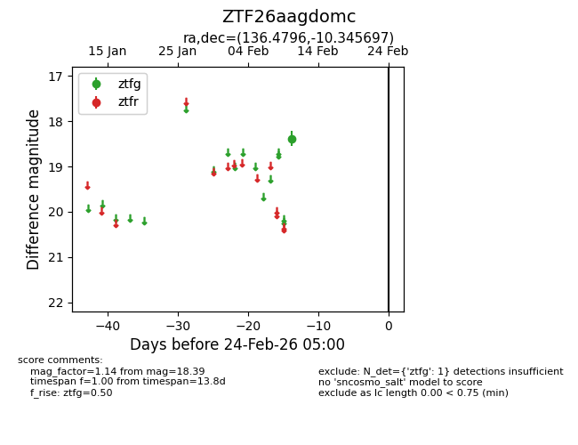
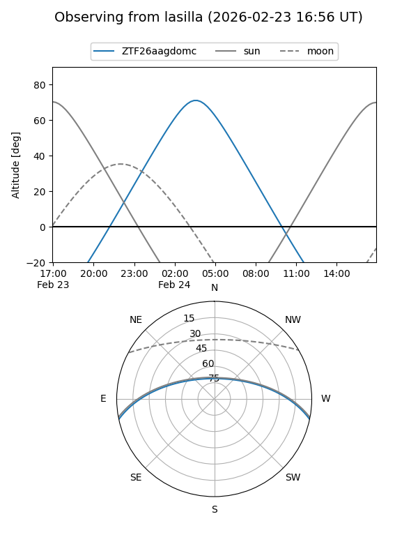
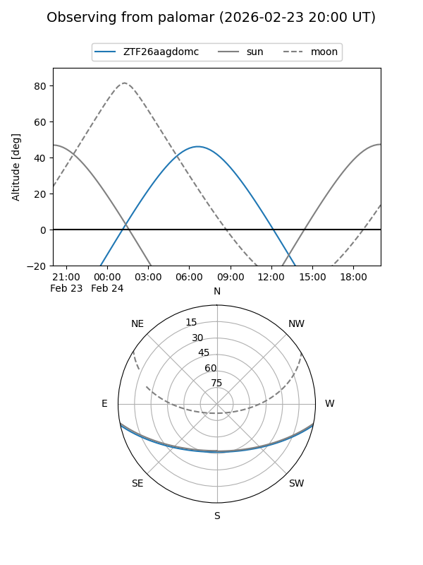

ZTF26aagdomc
Target ZTF26aagdomc at 2026-02-24 09:08
Aliases and brokers:
FINK: link
Lasair: link
ALeRCE: link
alt names
ZTF26aagdomc (ztf,fink_ztf)
Coordinates:
equatorial (ra, dec) = 136.4796,-10.34570
equatorial (HMS+DMS) = 09:05:55.11,-10:20:44.51
galactic (l, b) = (239.4187,+23.75786)
Flags:
Photometry:
last ztfg=18.39
1 ztfg detections
Lightcurve

Visibility


Additional plots